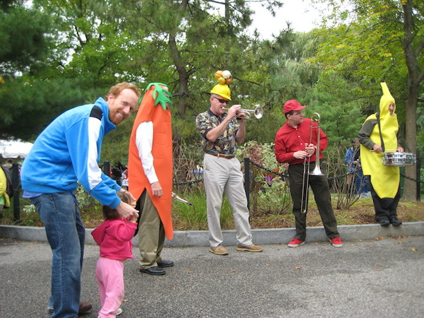
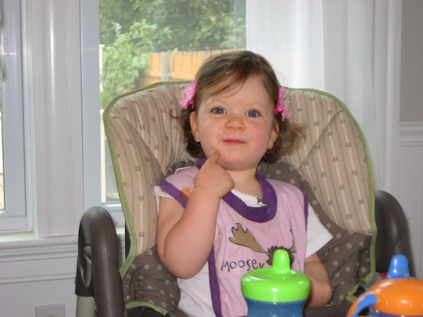
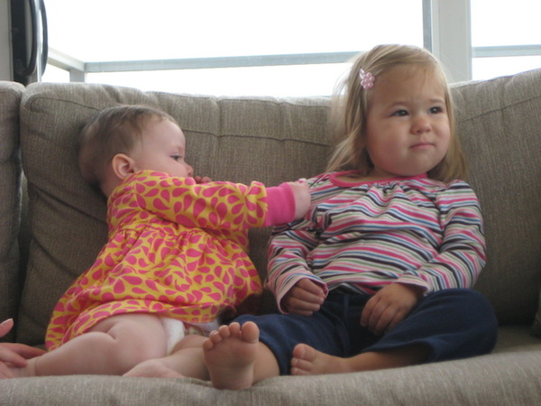

last week of september
Some weeks actually do repeat themselves with just enough variation to let us believe we're not living in a loop. Caroline, Bess, Ezra, Sanibel, and I drove to Maine and back this weekend to watch the grandparents see the prize-winning pumpkin at the Cumberland Fair. Ezra's just about walking. He's taken two steps on his own multiple times before realizing his mistake and asking for someone to prop him up.
Two years ago we also drove to Maine and back the last weekend of September (for one reason or another). Bess was just learning to walk, which absolutely astounds me. Hasn't she always been running around and speaking in full sentences?
We were also on the cusp of finding out about Ezra's existence. We've had ten weeks to adjust to the fact that we're expecting again, but that doesn't stop the autumn déjà vu (or the feeling that this isn't autumn at all but a rerun of July with lower humidity). It's not clear whether Ezra has come around to the baby news:

A year ago he was just starting to reach for (and eat) his feet. These days he uses them mostly for standing.

Bess hasn't lost any flexibility. Now she's the big girl at dance class. Ezra hasn't lost any bewilderment, but there's no way he'd fit in the Björn.

The fair was oven-hot the moment we arrived. I pity anyone who took their kids after nap, even if those kids did in fact take a nap. But the heat isn't that strange for September around here, apparently.

Two years ago we were bending over just slightly (it does not get easier with practice) and walking Bess around.
She sat in the high chair, ate everything we put in front of her, and didn't feed Sanibel (then try to deny it).
Way back at the beginning of time, three years ago, Bess was the baby tugging on Daphne's shirt (Daphne was quite stoic then, not sure Delilah has received the same calm acceptance). How quickly the hunter becomes the hunted.
